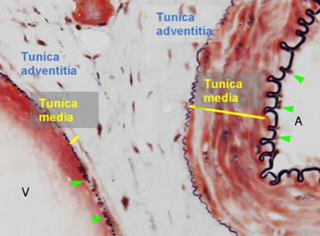
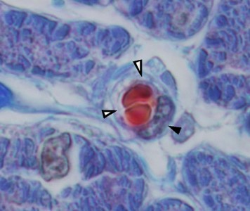

Bloedvaten:
Bloedvaten behoren tot het circulatiesysteem (bloedvatstelsel) van het lichaam. Aangezien we ze in de meeste weefsels terugvinden geven we hier een aantal belangrijke concepten mee.
Het bloedvatstelsel bestaat uit een arterieel systeem (slagaders) en een veneus systeem (aders), dat doorgaans via haarvaten (capillairen) met elkaar is verbonden. Aangezien ter hoogte van de capillairen moleculen doorheen de bloedvatwand moeten passeren bestaan ze nagenoeg uitsluitend uit een éénlagig plaveiselepitheel (= het endotheel). Terwijl bij het arterieel systeem de bloedvatwand dunner wordt naar het capillair netwerk toe, zal deze van daaruit naar het veneuze systeem steeds dikker worden. In grote bloedvaten onderscheiden we verschillende lagen: de tunica intima, de tunica media en de tunica adventitia.
Op dit moment is het belangrijk te onthouden dat de tunica adventitia uit bindweefsel bestaat. De tunica media bevat voornamelijk (glad) spierweefsel. Wanneer je arteriën en venen hebt met een gelijke diameter, zal de vaatwand van de arterie steeds beduidend dikker zijn dan deze van de vene. De tunica intima bestaat uit endotheel met hieronder een dun bindweefsellaagje.
Bloedvaten behoren tot het circulatiesysteem (bloedvatstelsel) van het lichaam. Aangezien we ze in de meeste weefsels terugvinden geven we hier een aantal belangrijke concepten mee.
Het bloedvatstelsel bestaat uit een arterieel systeem (slagaders) en een veneus systeem (aders), dat doorgaans via haarvaten (capillairen) met elkaar is verbonden. Aangezien ter hoogte van de capillairen moleculen doorheen de bloedvatwand moeten passeren bestaan ze nagenoeg uitsluitend uit een éénlagig plaveiselepitheel (= het endotheel). Terwijl bij het arterieel systeem de bloedvatwand dunner wordt naar het capillair netwerk toe, zal deze van daaruit naar het veneuze systeem steeds dikker worden. In grote bloedvaten onderscheiden we verschillende lagen: de tunica intima, de tunica media en de tunica adventitia.
Op dit moment is het belangrijk te onthouden dat de tunica adventitia uit bindweefsel bestaat. De tunica media bevat voornamelijk (glad) spierweefsel. Wanneer je arteriën en venen hebt met een gelijke diameter, zal de vaatwand van de arterie steeds beduidend dikker zijn dan deze van de vene. De tunica intima bestaat uit endotheel met hieronder een dun bindweefsellaagje.

Hier zie je een deel van de bloedvatwand van een vene (V) en een arterie (A). De arterie heeft een dikke tunica media, terwijl die veel dunner is bij de vene. Bij beide vaatwanden zie je endotheel (pijlpunten) dat het lumen aflijnt, en samen met het fijne onderliggende bindweefsellaagje de tunica intima vormt.

Dit is een sterke vergroting van een capillair. De rode bloedcellen (7 μm) passen net in het lumen van dit bloedvaatje. Merk de endotheelcelkern (pijlpunt) op en de dunne wand (open pijlpunten) die wordt gevormd door cytoplasma-uitlopers van de endotheelcel en de basaalmembraan.
Sluit dit venster en ga terug naar het zelfstudiepakket